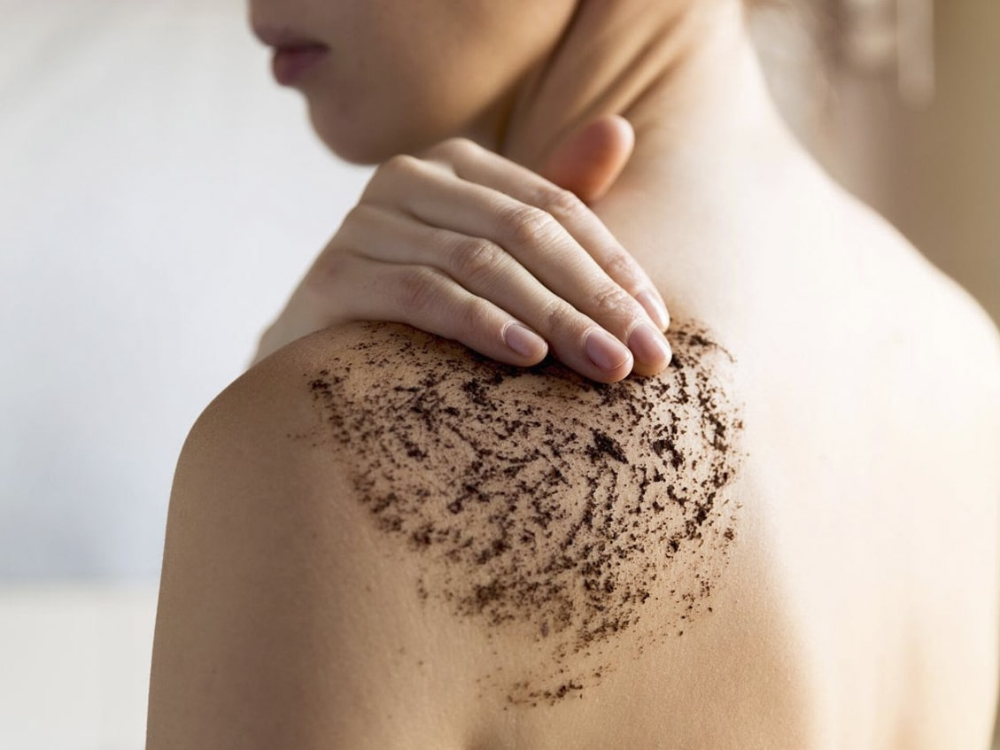

Belleza y Cuidado Corporal
En los últimos años, ha crecido la preocupación por la exposición a la contaminación del aire y la radiación solar. Se ha comprobado que estos tienen un efecto perjudicial sobre la piel. Esto explica la sequedad, las manchas oscuras y la aparición de arrugas a temprana edad.
La salud, la belleza y el autocuidado, son una de las tantas cosas por las que las personas se preocupan. Y no es para menos, la higiene y los buenos hábitos de aseo son indispensables en la vida de todo ser humano pues esto previene enfermedades, alergias e infecciones.
Nuestra rutina diaria de belleza como bien sabemos va más allá del verse lindas o lindos, se trata de cuidarnos, consentirnos y conocer nuestra piel y lo que mejor le queda a esta convirtiéndose en aliada fundamental.
A continuación te presentamos varios consejos para que te mimes, ya que el bienestar general de uno depende, no de que uno sea o no sea bello, sino de que uno se sienta bien consigo mismo.
Rutinas faciales
Querer tener una piel facial sana y fresca es un deseo muy común que muchas personas persiguen por medio de trucos y productos de belleza con los que pretenden rejuvenecer la apariencia de su cutis.
La belleza facial es una de las principales preocupaciones en el ámbito del cuidado de la imagen personal. No en vano, nuestro rostro es una carta de presentación y un punto determinante en la primera impresión que ofrecemos a los demás. Y ahí va nuestro primer consejo: una sonrisa es la mejor aliada de la belleza facial.
PASOS PARA UNA BUENA LIMPIEZA FACIAL:
- Limpia: es imprescindible que tu cara esté totalmente limpia antes de seguir con el resto del tratamiento. Lo ideal es limpiar la piel dos veces al día: por la mañana y por la noche.
- Tonifica: un buen tónico hidrata y reequilibra el PH de tu piel, estimula sus mecanismos de defensa y reduce el tamaño de los poros.
- Aplica el sérum: hay sérums para diferentes acciones: reparar, iluminar, hidratar, tratar las arrugas
- Hidrata: hidratar el rostro es el paso imprescindible en toda rutina de cuidado de la piel. Necesitamos de la humedad para mantener la elasticidad y el efecto barrera. Lo mejor es elegir hidratantes con aceites vegetales, ricos en Vitamina E y ácidos grasos, como el aceite de germen de trigo o el de rosa mosqueta.
Rutinas corporales
Nuestra piel está renovándose constantemente. Cada 28 días, células nuevas reemplazan las muertas y lo hacen de manera natural. Sin embargo, el cuerpo no tiene la capacidad de eliminar todas las células muertas. Además, con el tiempo, el ritmo es cada vez más lento. Como resultado, los poros se tapan, la piel no se oxigena ni absorbe los nutrientes que necesita para sentirse ni verse bien. La exfoliación elimina ese exceso de células muertas acumuladas en la epidermis que el cuerpo es incapaz de retirar.
Para empezar, te proponemos algunos exfoliantes caseros para el cuerpo:

- Exfoliante de azúcar y limón: se elabora mezclando 3 cucharadas de azúcar, 3 cucharadas de aceite y el zumo de medio limón y se aplica en el cuerpo, después aclaras.
- Exfoliante de azúcar y crema: se mezclan 3 cucharadas de crema hidratante y 2 cucharadas de azúcar y se aplica en el cuerpo, después aclaras.
- Exfoliante de bicarbonato de sodio: sirve para recuperar la suavidad de la piel. Se elabora mezclando 2 cucharadas de bicarbonato, 2 cucharadas de harina y un poco de agua. Se aplica en el cuerpo y después aclaras.
- Exfoliante de café: no solo sirve para exfoliar el cuerpo, también sirve para disminuir la celulitis de determinadas zonas y para hacer que se recupere la firmeza de la piel. Este exfoliante se elabora mezclando 2 tazas de café molido, media taza de azúcar y 3 cucharadas de aceite. Se aplica en el cuerpo y después aclaras.
¿Cómo exfoliar la piel?
Aplica la exfoliante facial sobre la piel limpia y extiéndelo con movimientos circulares suaves. Puedes ayudarte de tus manos o de una manopla. Retira el producto con agua tibia, aplica una crema hidratante y luego protección solar para un mejor resultado. Cuidado: Evita la exfoliación si tienes heridas abiertas en tu piel. Si tienes la piel seca, exfolia una vez por semana. Para pieles más grasosas, exfolia una o dos veces por semana. Si notas que tu piel se pone roja o sensible, disminuye la frecuencia.
Es importante saber que exfoliar el cuerpo es un ritual de belleza que hay que llevar a cabo por lo menos una vez a la semana para mantener tu piel hidratada y radiante. (Si tienes la piel grasa, lo más adecuado es entre 2 y 3 veces).
Técnicas de auto-masajes
El automasaje es un método terapéutico casero. Su objetivo principal es tratarse a uno mismo. Se basa en la aplicación de técnicas de masaje como: fricción, roce, amasamiento y vibración.Conoce algunas técnicas para darte un automasaje, liberar tensiones acumuladas y conseguir relajarte cuando no tienes la posibilidad de acudir a un masajista profesional.
Para darte un automasaje, debes aprender algunas técnicas de masajes. No todas las técnicas son adecuadas para todas las partes de cuerpo.
- La caricia: esta técnica se puede usar en todo el cuerpo, consiste en acariciar siempre de forma descendente la parte del cuerpo que se quiera auto masajear (las piernas, el cuello, etc) esta técnica va relajando la zona y la va preparando para un masaje más profundo.
- La presión leve con los dedos índice y mayor: esta técnica se puede utilizar en los músculos de la espalda, el cuello, y las pantorrillas. Con ambos dedos de ambas manos se realiza un masaje siempre desde el centro hacia afuera.
- El amasamiento: similar al amasado de una masa, esta técnica se utiliza en las partes blandas del cuerpo (los muslos, las caderas, la panza si existe exceso de grasa en la zona)
- Los toques repetidos: esta es una de las técnicas que se utilizan para finalizar los masajes. Se realiza un golpeteo constante con las palmas de las manos o la punta de los dedos, sobre los músculos masajeados.
Para lograr un excelente automasaje debes seguir los siguientes pasos:
- Comenzaremos el masaje por la zona de la cabeza. Presionaremos con suavidad con la punta de los dedos lo que llamamos la sienes, siguiendo el mismo paso con el contorno de las orejas, y la frente. Repetiremos varias veces. También podemos masajear la frente si tenemos dolor de cabeza intenso.
- Eliminaremos la tensión acumulada del cuello y de la zona de los hombros dando un masaje con movimientos circulares, siempre con la punta de los dedos. Colocaremos las palmas de las manos sobre la zona de los hombros y masajearemos yendo del cuello hacia los hombros. No esperemos a estar muy tensos para ocuparse de esta zona.
- Ahora ejerceremos una ligera presión con la mano derecha sobre los músculos del hombro izquierdo, masajeando profundamente desde el interior del hombro al exterior. Luego haremos lo mismo con la otra mano y hombro.
- En el último paso utilizaremos los extremos de los dedos para masajear de nuevo la frente y las sienes, hasta llegar a la zona de las mejillas. Y a continuación por el contorno de los labios, efectuando unos ligeros y pequeños movimientos en círculo para relajar la boca.
Cuidados para el pelo
Tener un cabello saludable, brillante e hidratado es el resultado de darle los cuidados adecuados, pero nadie nace sabiendo cómo cuidar el cabello. Por suerte, aquí te ayudaremos a descubrir cómo conseguir la mejor versión de tu pelo.
Aunque no existe una fórmula mágica que dicte cómo cuidar el cabello, hay un sinnúmero de buenas prácticas que puedes convertir en hábitos. Así, al incluir estos hábitos en tu rutina, conseguirás mejorar la apariencia y salud de tu pelo a largo plazo.
¿Cómo cuidar el cabello? Hábitos para incluir en tu rutina:
- Cepilla correctamente: desenredar el pelo es un hábito cotidiano esencial para el cuidado del pelo.
- Corta las puntas: al igual que la frecuencia de lavado, el tiempo entre cada despunte dependerá de cada cabello y tipo de corte.
- Vitaminas: un buen equilibrio de vitaminas del complejo B, la vitamina D, E y H, son imprescindibles para que tu pelo crezca sano y fuerte.
- Confía en los ingredientes naturales: Los champús naturales cuidan tu cabello de manera saludable y a largo plazo. Sus ingredientes se asimilan con mayor facilidad, ayudan a que tu pelo recupere su capacidad para retener humedad y a generar sus aceites de manera natural y con el tiempo, protege a tu cuero cabelludo de posibles irritaciones y alergias.